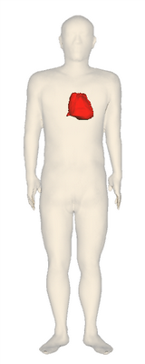

Step1: Generate an image file
Output of the sample program

A body surface (skin) and a heart painted with red color are rendered.
The skin should be translucent for you to see the heart, since the heart is surrounded by the skin.
Click BodyParts3D to see the table of all anatomical terms (organ names) available for Anatomography.
Explanation of the sample code
See also Javadoc for details of each methods.
line 17：
Generate an AgProp object where non-organ properties (e.g. image size, background color) are set.
See the following table for main properties.
line 18：
Set the image size.
line 21-32：
Generate an AnOrgan object that keeps organ properties, and add the object to an Array List.
See the following table for main properties.
line 35： Call getImage() method with two arguments, AgProp and AgOrgan.
Returned value of the method is a URL of the generated image.
line 41：
Download a PNG image from the returned URL and save it as "sample.png".
Related properties of AgOrgan
Property
|
Description
|
Default value
|
Example of setter |
Organ name (anatomical term)
|
Set an organ name in English.
Click [All registered terms in alphabetical order]
to see a table of available organ names.
|
null
|
setName("skin")
|
| Color and opacity |
color: R(0-255), G(0-255), B(0-255)
opacity: A(0.0-1.0)
|
R=240, G=210, B=160, A=1.0
|
setRGBA(240,210,160,1.0) |
Related properties of AgProp
| Property |
Description |
Default value |
Setter example |
Image size
|
Width (x) and height (y) of image |
x=300,y=300 |
setWinSize(240, 640) |
| Background color |
Background color of the image size
|
R=255,G=255,B=255 |
setBgColor(255, 255, 255) |
| Session timeout |
Maximum time waiting for response from Anatomography server in seconds |
300 |
setTimeOutInSeconds(300) |
サンプルコード
1 import jp.dbcls.ag.AgClient;
2 import jp.dbcls.ag.AgOrgan;
3 import jp.dbcls.ag.AgProp;
4
5 import java.util.ArrayList;
6
7 /**
8 * Step1 簡単な静止画を作成する
9 */
10 public class Step1 {
11 static AgProp prop = null;
12
13 static ArrayList organs = null;
14
15 public static void main(String[] args) throws Exception {
16 /** 各臓器の属性情報以外の属性情報（例：画面サイズ、背景色など）を指定するAgPropオブジェクトを作成します * */
17 prop = new AgProp();
18 prop.setWinSize(240, 640);
19
20 /** 各臓器の属性情報（例：臓器色、臓器不透明度、スカラー値など）を指定するAgOrganオブジェクトのArrayListを作成します。* */
21 organs = new ArrayList();
22 AgOrgan o;
23
24 o = new AgOrgan();
25 o.setName("skin"); // 皮膚を書きます
26 o.setOpacity(0.2); // 不透明度を0.2にして半透明にします。
27 organs.add(o);
28
29 o = new AgOrgan();
30 o.setName("heart"); // 心臓を書きます
31 o.setRGBA(255, 0, 0, 1.0); // 臓器色(R=255,G=0,B=0)を赤にします。
32 organs.add(o);
33
34 /** AgPropとAgOrganを引数にgetImageを呼び出して静止画を作成し、そのURLを取得します。* */
35 String imageurl = AgClient.getImage(prop, organs);
36
37 System.out.println("imageurl=" + imageurl);
38 String imagefile = "step1.png";
39
40 /** 静止画のURL(imageurl)から静止画ファイルを取得し、指定したファイル名(imagefile=step1.png)に保存します。* */
41 AgClient.saveFile(imageurl, imagefile);
42 }
43 }